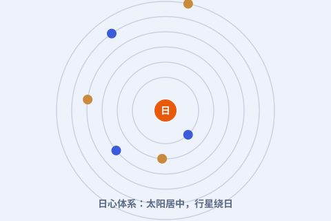

一、太阳坐在中心
哥白尼把宇宙的座位重新排了一次：太阳居中不动，水星、金星、地球、火星、木星、土星依次绕它转，最外一层是恒星天。地球，只是绕日行星中的普通一员。

二、地球也会动
在地心说里，地球是静止的中心；哥白尼却让地球动了起来：它每天自转一圈（带来昼夜），每年绕太阳公转一圈（带来寒来暑往）。我们感觉不到“在动”，只因为我们在上面一起动。
三、他能拿出证据吗
哥白尼的证据更多是“简洁”而非“观测碾压”：日心说能更自然地解释行星亮度的变化、逆行的成因，也顺带说清了为什么水星、金星从不远离太阳。真正用望远镜“实锤”的是后来的伽利略。
四、为什么是革命
更重要的是“视角转换”：宇宙不再以人为中心。这个念头后来被开普勒、伽利略、牛顿接力推进，最终重塑了整个人类对自己在宇宙中位置的理解。